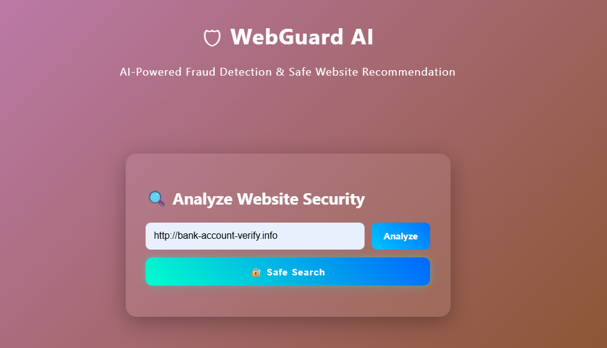
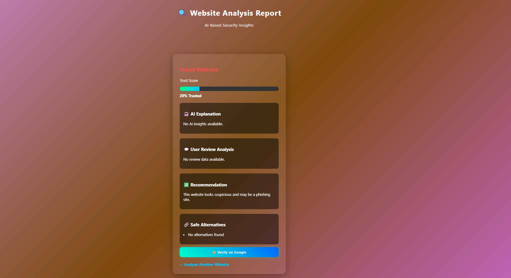
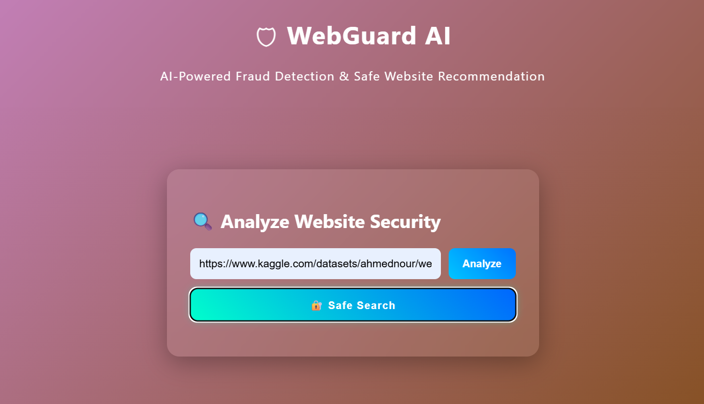

AI-Powered Fraud Detection & Safe Website Recommendation
Enter Website URL

Feature Extraction & Analysis

Verify on safe search

WebGuard AI is an intelligent web security system designed to detect fraudulent and malicious websites and recommend genuine and trusted alternatives.
It uses Machine Learning, LLMs, and sentiment analysis to classify websites as Genuine, Fraudulent, or Suspicious.
The goal is to protect users from phishing attacks, scams, and fake websites by providing real-time AI-based insights.